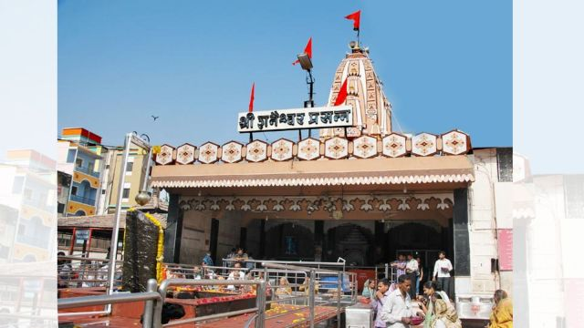
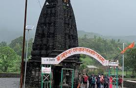
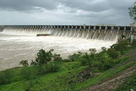

|  |

|

|
|---|---|---|
शनी-शिंगणापूरशनी शिंगणापूर हे महाराष्ट्र राज्यातील एक गाव आहे, जे शनी मंदिरासाठी प्रसिद्ध आहे. हे गाव या वस्तुस्थितीसाठी देखील प्रसिद्ध आहे की गावात कोणत्याही घराला दरवाजे नाहीत, फक्त दाराच्या चौकटी आहेत. |
साई बाबाशिर्डीचे साई बाबा हे एक आदरणीय भारतीय आध्यात्मिक गुरु होते जे शिर्डी गावात राहत होते आणि १९१८ मध्ये त्यांचे निधन झाले. प्रेम, एकता आणि करुणेवरील त्यांच्या शिकवणींसाठी हिंदू आणि मुस्लिम अनुयायी त्यांचा आदर करतात, ज्याचे प्रतीक त्यांच्या "सबका मालिक एक" (सर्वांसाठी एक देव) या वाक्याने दिले आहे. त्यांच्या वारशात त्यांच्या सन्मानार्थ बांधलेली असंख्य मंदिरे समाविष्ट आहेत आणि त्यांचे भक्त त्यांच्या आध्यात्मिक मार्गदर्शनासाठी जगभरात त्यांची पूजा करत आहेत... |
चांदबिबी महालचांदबीबी महाल हा अहमदनगर येथील एक ऐतिहासिक वास्तू आहे, जो चांदबीबी या शूर शासिकेच्या नावाने ओळखला जातो. चांदबीबी या निजामशाही घराण्यातील होत्या आणि त्यांनी विजापूरच्या आदिलशाहीच्या कारभारातही महत्त्वाची भूमिका बजावली. महालाची रचना आणि त्याचे वैशिष्ट्ये चांदबीबीच्या शौर्याचे आणि हुशारीचे प्रतीक आहेत |

|
 |  |
|---|---|---|
देवगडनेवासा येथील देवगड (सिद्ध क्षेत्र) हे दत्त मंदिरासाठी प्रसिद्ध आहे. हे ठिकाण पवित्र मानले जाते कारण येथे संत ज्ञानेश्वरांनी १२ व्या शतकात ज्ञानेश्वरी लिहिली होती, जिथे पैस खांब आहे. हे मंदिर प्रवरा नदीच्या काठी वसलेले आहे आणि ते एक शांत, धार्मिक ठिकाण आहे. |
रतनगडरतनगड हा अहमदनगर जिल्ह्यातील एक प्राचीन किल्ला आहे, जो ट्रेकिंगसाठी प्रसिद्ध आहे. हा किल्ला ४०० वर्षांपेक्षा जुना असून, शिवाजी महाराजांनी वापरला होता. रतनगडाला भेट देण्यासाठी ऑक्टोबर ते डिसेंबर हा काळ सर्वोत्तम असतो आणि ट्रेकिंगचा ग्रेड 'मध्यम' आहे. |
भंडारदराभंडारदरा हे महाराष्ट्रातील एक सुंदर ठिकाण आहे, जे प्रवरा नदीच्या काठावर वसलेले आहे आणि निसर्गरम्य धबधबे, डोंगर आणि भंडारदरा धरणासाठी प्रसिद्ध आहे. १९१० मध्ये मातीने बांधलेले हे धरण सिंचन आणि जलविद्युत निर्मितीसाठी महत्त्वाचे आहे आणि हे ठिकाण सह्याद्रीच्या पर्वतरांगांमध्ये वसलेले आहे. मुंबई आणि पुणे या शहरांपासून ते अंदाजे १६०-१७० किलोमीटर अंतरावर आहे. |